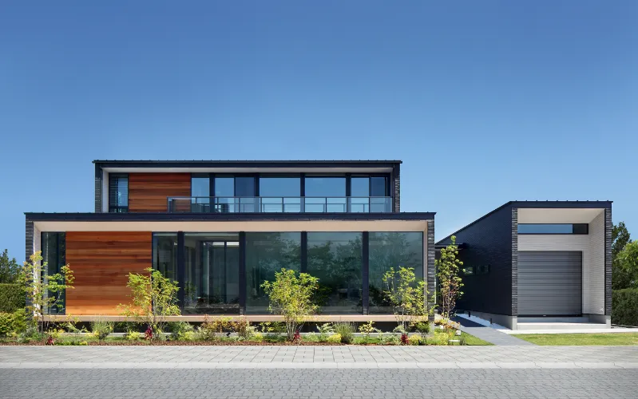
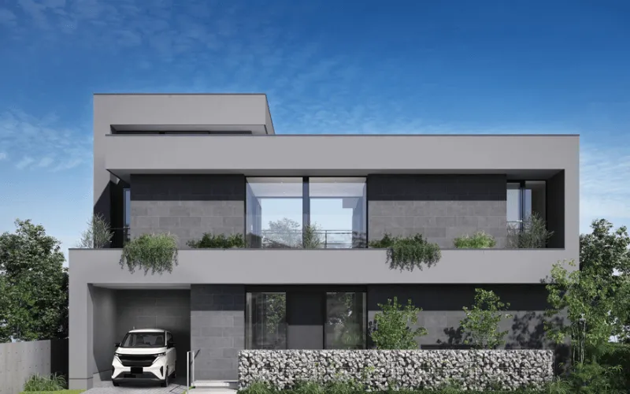
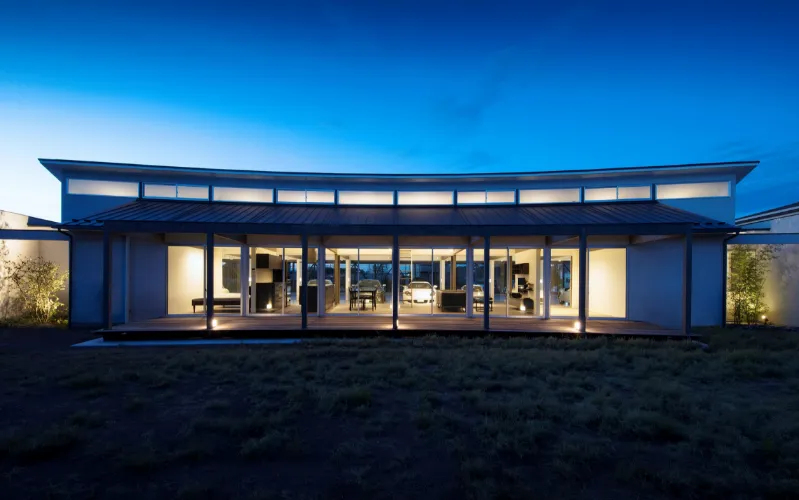
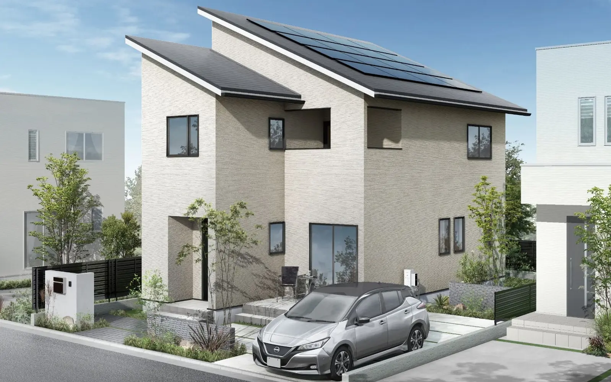
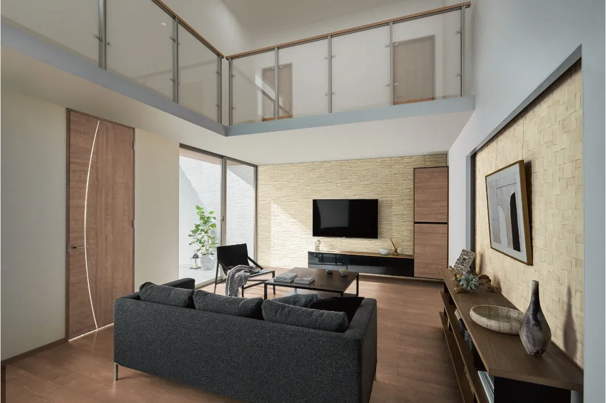
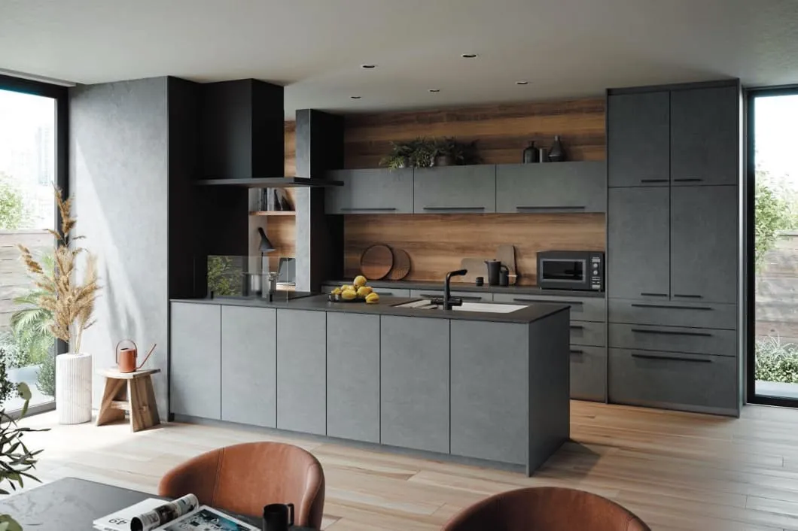
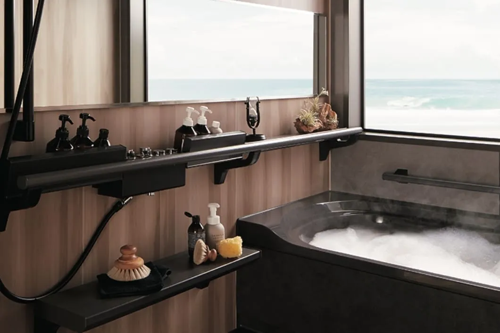

① 会社・基本データ
株式会社ヤマダホームズは、家電量販大手ヤマダデンキ（株式会社ヤマダホールディングス）傘下のハウスメーカー。1951年に「三成建築工業」として大阪で創業し、「小堀住研」「エス・バイ・エル」を経て、2018年に4社合併で現社名となった。エスバイエル時代から継承する独自工法「SxL構法（木質パネル一体構法）」は1982年発売以来13万棟超、ヒノキ集成材の採用実績は累計約17万棟に達する。
| 項目 | 内容 |
|---|---|
| 会社名 | 株式会社ヤマダホームズ |
| 設立 | 1951年6月14日（前身「三成建築工業」として大阪で創業） |
| 本社 | 群馬県高崎市栄町1番1号 |
| 代表者 | 代表取締役会長兼社長 小林 辰夫 |
| 資本金 | 1億円 |
| 親会社 | 株式会社ヤマダホールディングス |
| 売上高 | 917億円（2025年3月期・単体。前期比+14.1%、営業利益5.23億円で黒字転換） |
| 従業員数 | 約1,796人（単体・2024年2月末／連結1,968人） |
| SxL構法の累計実績 | 1982年発売以来13万棟超 |
| ヒノキ集成材採用実績 | 累計約17万棟 |
| 対応エリア | 全国（北海道〜沖縄）。東日本・中日本・西日本の3支社体制＋全国FC店網 |
| 事業内容 | 注文住宅・分譲住宅・リフォーム・不動産（賃貸/売買/仲介） |
沿革（主要トピック）
| 年 | できごと |
|---|---|
| 1951年 | 三成建築工業として大阪で創業 |
| 1965年 | 「小堀住研」に社名変更。木質パネル接着工法のパイオニア |
| 1982年 | SxL構法（木質パネル一体構法）の初代商品を発売（以降13万棟超） |
| 1990年10月 | 「エス・バイ・エル株式会社」に社名変更 |
| 2011年10月 | ヤマダ電機と資本業務提携（連結子会社化） |
| 2018年10月 | 4社合併でヤマダホームズ誕生 |
| 2020年9月 | ヒノキヤグループ（桧家住宅）をTOB・連結子会社化 |
| 2024年8月 | 新主力商品「RASIO」発売（ティンバーメタル工法＋W断熱でUA値0.37・初期20年保証） |
| 2024年10月 | LIXILと住宅分野のCO₂排出削減で協働発表 |
| 2025年3月期 | ヤマダホームズ単体売上917億円（前期比+14.1%）、営業利益5.23億円で黒字転換 |
グループ関連会社
- 株式会社ヤマダデンキ（家電小売のグループ本丸）
- ヤマダリフォーム（リフォーム専業）
- レオハウス（ローコスト系ブランド）
- 株式会社ヒノキヤグループ（桧家住宅・パパまるハウス等を統合）
- 株式会社日本産業（住宅部材関連）
一言で言うと？
「くらしまるごとヤマダ」をコンセプトに、家・家電・家具・リフォームをグループ横断で一括提供するハウスメーカー。エスバイエル時代のSxL構法（木質パネル一体構法）という独自技術を継承しつつ、2024年8月発売の新主力「RASIO」（ティンバーメタル工法＋W断熱・初期20年保証）とヤマダ電機の家電流通力を活かした「フル装備住宅（RASIO-F）」で差別化している。
② 商品ラインナップと坪単価
2026年4月時点の公式ラインアップを中心に再構成。RASIO／RASIO-F／YAMADAスマートハウスが現行主力。felidia・el felidiaは商品別ページは残存するが、メインラインアップからは外れており旧商品系として扱う。Be:lux／yamadano ie／Custom Styleは公式ラインアップから確認できず、参考情報として最小限の記載に留める。

現行主力商品（2026年時点）
| 商品名 | 坪単価目安 | 構法 | 主な特徴 |
|---|---|---|---|
| RASIO（ラシオ） ※2024年8月発売の新主力 | 75〜95万円 | ティンバーメタル工法＋制震ダンパー | UA値0.37（W断熱：グラスウール＋フェノールフォーム）。初期20年保証（構造躯体・防水・防蟻・地盤の4項目） |
| RASIO-F（ラシオ・エフ） | 75〜100万円（家電・家具・設備込み） | ティンバーメタル工法 | フル装備住宅版（照明・エアコン・カーテン標準）。旧「スーパーフル装備住宅」相当の後継 |
| YAMADAスマートハウス | 95〜102万円〜 | ティンバーメタル工法系 | 太陽光・V2H・蓄電池・EV標準。脱炭素志向の上位モデル |
| Y Limited（ワイ・リミテッド） | 60万円〜 | 木造軸組 | 60プラン規格住宅。価格透明性の高いエントリー規格 |
| SxLシグマ | 60〜80万円 | SxL構法（木質パネル一体構法） | エスバイエル由来。1982年発売以来13万棟超の実績 |
| SxLアルファ | 50〜65万円 | SxL構法 | SxL構法の規格住宅版。コスト抑制 |
| 小堀の住まい | 80〜120万円 | 木造軸組（オーダー） | 建築家ブランド「小堀住研」系譜。高級オーダーメイド |
参考：旧主力・前身商品
Felidia-el（エルフェリディア）／ felidia（フェリディア）はRASIOの前身にあたる旧主力シリーズ。商品別ページは残存するが、公式メインラインアップからは外れている。検討中の物件がfelidia系の場合は、現行RASIOへの置き換え提案可否を営業に確認推奨。「スーパーフル装備住宅」は現在RASIO-Fに再編。


坪単価の分布（現行主力基準）
| グレード | 坪単価 | 相当商品 | 総額目安（35坪） |
|---|---|---|---|
| エントリー | 50〜65万円 | Y Limited・SxLアルファ | 1,750〜2,275万円 |
| スタンダード | 65〜80万円 | SxLシグマ | 2,275〜2,800万円 |
| ハイクラス | 75〜100万円 | RASIO・RASIO-F | 2,625〜3,500万円 |
| プレミアム | 95〜120万円 | YAMADAスマートハウス・小堀の住まい | 3,325〜4,200万円 |
全体平均坪単価（2026年）
| 情報源 | 平均坪単価 |
|---|---|
| 不動産売却マイスター | 76.5万円 |
| ouchicanvas | 72.4万円 |
| ouchi-iroha | 77.5万円 |
| 総合目安 | 約73〜77万円 |
建築総額目安（平均35坪想定）: 約3,200〜3,500万円（本体2,550〜2,700万円＋付帯工事費510〜540万円＋外構150〜250万円）。「家電・家具・太陽光込み」のRASIO-Fであれば、同総額で他社より生活立ち上げコストを200〜400万円節約できるケースもあり。
③ 構造・耐震性能
SxL構法（木質パネル接着工法）
エスバイエル時代から継承される独自工法。住宅業界では希少な「型式適合認定」「型式部材等製造者認定」の両方を取得。

| 項目 | 詳細 |
|---|---|
| 工法 | 木質パネル接着工法（枠材＋合板を接着一体化） |
| 接着剤 | 耐用年数100年相当の水性イソシアネート系接着剤 |
| プレス圧力 | 1㎡あたり70tの高圧力＋高温プレス |
| パネル強度 | 垂直負荷試験で1枚あたり最大9.6tまで耐える |
| 横荷重強度 | 釘打ちパネルの約1.3倍 |
| 構造方式 | 床・壁・天井を木質パネルで貼り付け、6面体ボックス構造を形成 |
| 耐震等級 | 耐震等級3（最高等級）対応 |
| 公的認定 | 国内44,000社中十数社のみが取得している2つの公的認定・認証を保有 |
工法ラインナップ（商品別）
| 商品 | 主な工法 | 特徴 |
|---|---|---|
| RASIO / RASIO-F / YAMADAスマートハウス | ティンバーメタル工法＋制震ダンパー | 構造金物で接合＋外周に耐力面材。2024年以降の主力工法 |
| Felidia-el / felidia（旧主力） | ティンバーメタル工法＋制震ダンパー | RASIOの前身。ティンバーメタルを先行搭載 |
| SxLシグマ / アルファ | SxL構法（木質パネル一体構法） | エスバイエル由来。最大9.6t耐久パネル |
| Y Limited | 木造軸組 | 規格住宅向け在来軸組 |
| 小堀の住まい | 木造軸組（オーダー） | 建築家ブランド由来 |
基礎工法と耐震実績
- ベタ基礎（標準）
- 剛床工法（横揺れ・ねじれに強い）
- 地盤保証10年（地盤調査＋補強工事込み）
- SxL構法は1982年発売以来13万棟超。阪神・淡路大震災・東日本大震災でも構造被害報告は限定的
- 制震ダンパー: RASIO／Felidia系で標準または選択可能
耐震等級3は標準取得可能。SxL構法パネルの耐力（最大9.6t）は他社木造と比べても優秀。ただし、RASIO・Felidia等のティンバーメタル系商品とSxLシリーズは別工法のため、商品選定時に工法を確認することが重要。
④ 断熱性能
UA値（外皮平均熱貫流率）
| 商品 | UA値 | 断熱等級 | 備考 |
|---|---|---|---|
| RASIO（標準） | 0.37 W/m²K | 等級6 | W断熱：グラスウール＋フェノールフォーム（プレスリリース明記値） |
| RASIO（プレミアム仕様） | 0.28前後 W/m²K（目安） | 等級7相当 | 一次情報で数値未確認（要再確認） |
| Felidia-el / felidia（旧主力） | 公式商品ページではUA値非公表 | 等級6相当 | UA値0.37は現行RASIOの値であり、felidia標準値としての一次情報なし |
| SxLシグマ（2×6仕様） | 0.43 W/m²K | 等級5〜6 | 壁パネル2×6＋ウレタン吹付130mm |
| RASIO-F（フル装備版） | RASIO同等 | 等級6 | 基本仕様はRASIOを継承 |
| Y Limited | 0.50〜0.60 W/m²K（目安） | 等級4〜5 | 公式で非公表（要再確認） |
| （参考）国の省エネ基準 | 0.87 W/m²K | 等級4 | ー |
断熱材・窓の仕様（RASIO基準）
| 部位 | 主な断熱材・仕様 | 厚さ/熱貫流率 |
|---|---|---|
| 外壁 | 高性能グラスウール＋フェノールフォーム（W断熱） | 90〜130mm |
| 天井 | ブローイング or 高性能グラスウール | 200〜235mm |
| 床 | 押出法ポリスチレン or ウレタン | 80〜100mm |
| 窓（標準） | Low-Eペアガラス＋樹脂複合サッシ | 熱貫流率 1.8〜2.3 |
| 窓（プレミアム） | Low-Eトリプル＋オール樹脂サッシ | 熱貫流率 1.0〜1.3 |
空気質向上設備（RASIO／Felidia系）
- ハイクリンボード: ホルムアルデヒドを吸着・分解する機能性石膏ボード
- 全熱交換型24時間換気システム（RASIO上位／Felidia-el等）: 第一種換気で温度・湿度を熱交換
他社との断熱性能比較
| ハウスメーカー | UA値（代表値） | 断熱等級 |
|---|---|---|
| 一条工務店（i-smart） | 0.25 | 等級7 |
| タマホーム（笑顔の家） | 0.23 | 等級7 |
| ヤマダホームズ（RASIO標準） | 0.37 | 等級6 |
| スウェーデンハウス | 0.38 | 等級6 |
| ヤマダホームズ（SxLシグマ） | 0.43 | 等級5〜6 |
| 三井ホーム | 0.43 | 等級5〜6 |
| 住友林業 | 0.46 | 等級5 |
| 積水ハウス（木造） | 0.46〜0.60 | 等級5 |
RASIO標準のUA値0.37は大手HMの中で中上位水準。ただし一条工務店やタマホーム笑顔の家（UA値0.23）と比べると一歩譲る。コスト面とのバランスで判断するのが現実的。
⑤ 気密性能
C値（相当隙間面積）
| 項目 | 数値 |
|---|---|
| RASIO 標準C値目安 | 1.0前後 cm²/m²（二次情報） |
| RASIO プレミアム仕様 | 0.5〜0.7 cm²/m²（二次情報） |
| SxLシグマ | 1.0〜1.5 cm²/m²（二次情報） |
| Y Limited／RASIO-F | 1.5〜2.5 cm²/m²（二次情報） |
| 実測報告事例（施主ブログ） | 0.4〜3.6まで幅あり（施工店差が大きい） |
気密測定の実態
- 全棟気密測定は標準では実施していない（オプション扱い）
- 施主がオプションで依頼すれば中間測定は可能
- 公式サイトでもC値は公表されていない
- 実際の施主ブログでは「C値0.4が出た」から「C値3.6」まで幅広く、フランチャイズ施工店の技術差が数値に直結する
他社との気密性能比較
| ハウスメーカー | C値（公表データ） | 全棟測定 |
|---|---|---|
| 一条工務店 | 0.59（全棟平均） | 全棟実施 |
| アイ工務店 | 0.5〜1.0 | 希望者のみ |
| ヤマダホームズ | 非公表（実測1.0前後） | オプション |
| 住友林業 | 非公表 | 希望者のみ |
| 積水ハウス | 非公表 | 実施せず |
| タマホーム | 非公表 | 実施せず |
一条工務店（C値0.59全棟公開）と比べると気密性能の「見える化」は大きく劣る。特にRASIO-FやY Limited等の規格系商品は施工店差が出やすい。契約前にC値の実績値と気密測定の実施可否を必ず確認することが重要。
⑥ 換気・空調／ZEH・省エネ
換気システム
| 換気方式 | 採用商品 | 特徴 |
|---|---|---|
| 第1種換気（全熱交換型） | RASIO上位・Felidia-el | 温度・湿度を熱交換。花粉・PM2.5フィルター対応 |
| 第3種換気 | RASIO-F・SxLシグマ（標準）・Y Limited | シンプル排気型。コスト安・メンテ簡単 |
| ダクトレス全熱交換 | 一部商品（オプション） | 壁面設置で配管レス |
空調対応
- RASIO-F（フル装備住宅）: エアコンは富士通ゼネラル製が全室標準付属。暖房能力を強化した「ZNシリーズ」を選択可能
- 全館空調: 独自の全館空調システムはなく、各メーカー（三菱「パラディア」等）を提案オプションとして採用可能
- 全館床暖房: オプションで選択可能。ただし一条工務店のような標準装備ではない
ZEHビルダー登録と省エネ装備
| 装備 | RASIO-F／YAMADAスマートハウス |
|---|---|
| 太陽光発電システム | 標準装備（4〜6kW相当） |
| エコキュート | 標準装備 |
| IHクッキングヒーター | 標準装備 |
| 蓄電池 | オプション（追加費用50〜150万円） |
| V2H設備 | オプション |
ヤマダグループの家電流通力を活かし、太陽光発電・エコキュート等の設備を他社よりコスト優位に調達できる点が最大の差別化。ZEH基準対応はRASIO・RASIO-F・YAMADAスマートハウスで可能。BELS（建築物省エネルギー性能表示）評価取得可。
LIXILとの脱炭素協働（2024年10月〜）: ヤマダホームズとLIXILは「住宅分野のCO₂排出削減」で協働を発表。資材調達から廃棄までのライフサイクルCO₂削減を目指す取り組み。将来的にLIXIL製品の採用拡大とコストダウンが期待される。
⑦ デザイン・フル装備



商品ラインごとのデザイン志向
- RASIO／RASIO-F: 現行主力。シンプルモダン〜ナチュラルを中心に、家電・家具まで含めたワンストップのトータルコーディネートを提案
- YAMADAスマートハウス: 太陽光・V2H・蓄電池・EVを前提としたスマートハウス志向
- 小堀の住まい: 建築家ブランド「小堀住研」系譜の高級オーダーメイド。和モダン・数寄屋などに強み
- Y Limited: 60プラン規格住宅。価格透明性重視の若年層向けベーシックデザイン
RASIO-F（フル装備住宅）の装備内容
旧「スーパーフル装備住宅」の後継。家電・家具・設備をセットで標準化することで、生活立ち上げコストを大幅に抑えられる。
- エアコン（富士通ゼネラル製・全室標準）
- 照明・カーテン（標準セット）
- 太陽光発電・エコキュート・IHクッキングヒーター（標準装備）
- 冷蔵庫・洗濯機・テレビ等は商品プランにより標準 or 追加オプション
フル装備の内容は選択肢が限定的で、完全自由カスタマイズはできない。契約前に装備内容リストを必ず入手し、要不要を精査。不要なら「RASIO-F」ではなくRASIO（家電なし）を検討する選択肢もある。
⑧ 保証・メンテナンス
保証体系（現行RASIO基準）
| 保証内容 | 初期保証 | 最大延長 | 条件 |
|---|---|---|---|
| 構造躯体 | 初期20年（無償） | 最大60年（長期優良住宅取得時）/ 最大30年（未取得時） | 10年毎の有償メンテナンス実施が条件 |
| 雨水侵入防止 | 初期20年（無償） | 最大60年 | 同上 |
| 防蟻（シロアリ） | 初期20年（無償） | 最大60年 | 5〜10年毎の防蟻再施工が条件 |
| 地盤保証 | 初期20年（無償） | ー | 地盤調査＋補強工事込み |
| 住宅設備10年保証 | 10年無償 | ー | 給湯器・IH等の設備故障を無償対応 |
| 家電10年保証（RASIO-F等） | 10年 | ー | ヤマダデンキ連携。メーカー保証後も10年修理対応 |
SxL系・Y Limited等はRASIO系と保証が違う: SxLシグマ／アルファ、Y Limited、小堀の住まい等、RASIO系以外の商品は構造躯体・雨水侵入防止・防蟻の初期保証は従来どおり10年。最大延長60年の条件は同様。初期20年保証（4項目）が標準なのはRASIO／RASIO-F／YAMADAスマートハウスのみ。
住宅設備10年保証＆家電10年保証（業界随一の強み）
- 住宅設備10年保証: 給湯器・IH・換気扇等のメーカー保証（通常1〜2年）が切れた後も、10年目まで修理費無料。ヤマダデンキの家電修理網を活用した独自サービス
- 家電10年保証（RASIO-F）: エアコン・冷蔵庫・洗濯機等もヤマダデンキの10年保証に準じて修理対応。ただし「経年交換費用」までカバーするものではなく、故障修理が主な対象
定期点検スケジュール
| タイミング | 内容 |
|---|---|
| 引き渡し後6ヶ月／1年／2年／5年 | 無料点検 |
| 10年 | 有償メンテナンス（保証延長の条件） |
| 20年／30年／以降10年毎 | 有償メンテナンス |
他社との保証期間比較
| ハウスメーカー | 初期保証 | 最大延長 | 設備保証 |
|---|---|---|---|
| ヤマダホームズ（RASIO系） | 20年（4項目） | 60年 | 10年（家電込み） |
| ヤマダホームズ（SxL系等） | 10年 | 60年 | 10年 |
| 一条工務店 | 30年 | 30年 | ー |
| 住友林業 | 30年 | 60年 | ー |
| 積水ハウス | 30年 | 永年 | ー |
| タマホーム | 10年 | 60年 | ー |
| 三井ホーム | 10年 | 60年 | ー |
60年保証は「無料で60年保証」ではない。10年ごとの有償メンテナンス工事（1回あたり数十万〜100万円超）を実施した場合のみ保証が延長される点は他社と同じ。RASIO系は無条件保証が初期20年、それ以外の商品は初期10年である点を理解した上で検討する必要がある。
⑨ 建築期間
| フェーズ | 期間目安 |
|---|---|
| 展示場見学〜仮契約 | 1〜2ヶ月 |
| 仮契約〜本契約（間取り打合せ） | 2〜4ヶ月 |
| 本契約〜着工（詳細設計・確認申請） | 1〜3ヶ月 |
| 着工〜上棟 | 1〜2ヶ月 |
| 上棟〜引渡し | 3〜4ヶ月 |
| 合計（初回来場〜引渡し） | 8〜15ヶ月 |
| 着工〜引渡し | 4〜6ヶ月 |
工期の特徴
- 木造軸組中心のため現場施工の比重が高い → 工期は標準的
- フランチャイズ店の工程管理差が工期に影響する場合あり
- 規格住宅（Y Limited等）なら打合せ期間を大幅短縮可能（全体6〜9ヶ月程度）
一条工務店のように工場生産比率が高くないため、工期は施工店の技量に依存する。契約前に工程表と過去実績を確認することを推奨。
⑩ 客層・向き不向き
典型的な施主プロファイル
| 属性 | 傾向 |
|---|---|
| 年齢 | 25〜40代（若年層に特に人気） |
| 世帯構成 | 共働きファミリー・子育て世代・初めての家づくり層 |
| 世帯年収 | 400〜700万円台がボリュームゾーン |
| 最低年収目安 | 世帯年収350万円〜（Y Limited等の規格住宅） |
| 価値観 | 「家電もまとめてお得に」「全部おまかせパッケージ」志向 |
| 情報収集 | ヤマダデンキ来店ついで・チラシ・SNSで認知。展示場で詳細比較 |
ヤマダホームズを選ぶ理由TOP3
- RASIO-F（フル装備住宅）で生活立ち上げがラク（家電・家具・設備が全部込み）
- ヤマダデンキのポイント・会員特典が使える（建物価格で最大数十万円相当のポイント還元も）
- 価格・コスパ重視で決めやすい（ローコスト〜ミドルHMの中では設備充実・RASIO系は20年保証）
向いている人
- 家電・家具・設備込みで時短したい共働き層
- ヤマダデンキのポイント・会員特典を活用したい
- 25〜35歳、初めての家づくりでおまかせ志向
- SxL構法の高耐震を重視する
- 設備・家電の10年保証を重視
向かない人
- 気密性能（C値）を数値保証してほしい
- 家電・家具に強いこだわりがある
- 設計士と直接コミュニケーションを取りたい
- 工法の統一性にこだわる
- FC店の品質差リスクを回避したい
⑪ 他社との比較表
総合比較表（ローコスト〜中堅HM中心）
| 項目 | ヤマダホームズ | タマホーム | アイフルホーム | レオハウス | 一条工務店 |
|---|---|---|---|---|---|
| 平均坪単価 | 73〜77万円 | 55〜70万円 | 60〜70万円 | 69〜92万円 | 85〜100万円 |
| 主力商品UA値 | 0.37（RASIO） | 0.55 / 0.23（笑顔） | 0.46〜0.60 | 0.50前後 | 0.25 |
| C値 | 非公表（1.0前後） | 非公表 | 非公表 | 非公表 | 0.59全棟公開 |
| 構造 | ティンバーメタル／SxL／軸組 | 木造軸組 | 木造軸組・2×4 | 木造軸組 | 木造2×6 |
| 保証（初期） | 20年（RASIO系）/10年 | 10年 | 10年 | 10年 | 30年 |
| 設備保証 | 10年 | ー | ー | ー | ー |
| 家電セット | ◎（フル装備） | ー | ー | ー | ー |
| 全館床暖房 | オプション | なし | なし | なし | 標準 |
| 値引き | 3〜5% | 5〜10% | 3〜7% | 3〜7% | ほぼなし |
ヤマダホームズ vs 主要HM（1対1比較）
| 相手 | 勝っている点 | 負けている点 | 向く人 |
|---|---|---|---|
| タマホーム | 設備10年保証／RASIO系初期20年保証／家電込み | 坪単価がやや高い／笑顔の家の断熱（UA値0.23）に劣る | 家電込みで時短したい人 |
| アイフルホーム | 家電・家具・設備のワンストップ性 | LIXIL設備を単体で選びたい場合はアイフル優位 | 設備まで一括で決めたい人 |
| レオハウス（グループ） | フル装備・家電連携 | 家本体のみでコスパ追求ならレオハウス | 設備充実志向 |
| 一条工務店 | 家電・家具込みトータルコスト／設計自由度 | 断熱・気密は一条が圧倒 | トータルコスト重視・時短派 |
業界内の立ち位置: 平均坪単価ランキングローコスト住宅7位（HOME4U 2026年版）。ouchicanvasは「ミドルコスト」「グッドバランス型」に分類。純粋ローコスト（タマホーム・アイフル）と中堅HM（三井ホーム・住友林業）の中間に位置する「ローコスト寄りミドル」。
⑫ よくある後悔・失敗事例
後悔1：フランチャイズ店の品質差で施工不良
「基礎の養生が不十分だった」「クロスの貼り付け精度が低い」等の指摘。ヤマダホームズはフランチャイズ制を一部採用しており、実際に施工する工務店により品質差が出る。特に地方エリアでは、FC店のベテラン職人不足で施工品質が安定しないケースあり。
契約前に「直営施工かFC施工か」を確認し、FCの場合は過去実績・施工現場見学を依頼。
後悔2：担当者の対応・引き継ぎが悪い
「契約後に担当者が変わり、最初の打合せ内容が引き継がれていなかった」「質問への回答が遅い」「設計士と直接話せない」。口コミ調査50件超でも担当者対応への不満が最頻出の不満点。
営業担当の異動リスクを想定し、重要な約束は必ず書面で確認。不満が出たら支店長・エリアマネージャーへエスカレーション。
後悔3：フル装備住宅（RASIO-F）が自分に合わなかった
「家電は自分で選びたかった」「家具のデザインが好みに合わなかった」「冷蔵庫・洗濯機の容量が家族構成と合わず、結局買い替えた」。フル装備の内容は基本的に選択肢が限定的で、完全自由カスタマイズはできない。
装備内容リストを事前に入手し、要不要を精査。不要なら「RASIO-F」ではなくRASIO（家電なし）を検討。
後悔4：オプション費用の積み上がり
標準仕様から変更するたびに追加費用が発生。「見積もりが最終的に当初の1.2〜1.5倍になった」という声。床材のグレードアップ・窓サイズ変更・造作家具で数十〜100万円超の追加。
標準仕様を最初に全て確認し、どこを変更すると費用が上がるか事前把握。オプション予算枠を契約時に明確化。
後悔5：気密性能の施工店差
C値が公表されていないため、契約時に性能を数値で保証されない。実測で0.4と優秀なケースもあれば、3.6以上のルーズなケースもあり、施工店の技量に大きく依存。冬の隙間風・結露の苦情につながるケースあり。
契約前に気密測定の実施可否・保証値を確認。オプションでもC値目標値を書面化。
後悔6：家電10年保証の対象範囲が思ったより狭い
「10年保証があるから安心」と思ったが、故障修理のみで「経年劣化での買い替え」はカバーされない。エアコンの冷媒漏れなど10年以内の故障には対応するが、性能低下での買い替え希望は自己負担。
保証約款で「免責事項」を確認。特に消耗品・経年劣化扱いの範囲に注意。
後悔7：値引き交渉で期待した成果が得られなかった
一条工務店のように定価販売ではないが、大手HMほどの大幅値引き（10%超）は難しい。「他社と比較検討したが、ヤマダは値引きより設備サービスに振る傾向」。
値引き率より「オプションサービス・設備アップグレード」での交渉が有効。
後悔8：契約を断ったら営業対応が急に冷たくなった
口コミで散見される不満。「検討段階では丁寧だったが、契約しないとわかるとフォローが止まる」。一部の営業担当者の個人特性と、FC営業マンの歩合制による影響。
検討段階からしっかり複数社比較し、決断後は毅然とした態度で。引き続き良好関係を維持できる担当者を選ぶ。
⑬ 坪数別の建築総額・顧客満足度
坪数別の建築総額シミュレーション（RASIO基準・坪単価75万円想定）
| 坪数 | 本体工事費 | 建築総額目安 | 月々返済額（35年/1.5%） |
|---|---|---|---|
| 25坪 | 約1,875万円 | 約2,370〜2,430万円 | 約7.3〜7.5万円 |
| 30坪 | 約2,250万円 | 約2,850〜2,920万円 | 約8.8〜9.0万円 |
| 35坪 | 約2,625万円 | 約3,330〜3,400万円 | 約10.3〜10.5万円 |
| 40坪 | 約3,000万円 | 約3,800〜3,880万円 | 約11.7〜12.0万円 |
| 45坪 | 約3,375万円 | 約4,280〜4,370万円 | 約13.2〜13.5万円 |
商品別の坪単価と総額目安（35坪想定）
| 商品 | 坪単価 | 総額目安（付帯20%込み・外構別） |
|---|---|---|
| Y Limited | 60万円 | 約2,520万円 |
| SxLアルファ | 55万円 | 約2,310万円 |
| SxLシグマ | 70万円 | 約2,940万円 |
| RASIO（主力） | 75万円 | 約3,150万円 |
| RASIO-F（フル装備） | 85万円（家電・家具込み） | 約3,570万円（生活立ち上げ費込み） |
| YAMADAスマートハウス | 100万円（太陽光・V2H込み） | 約4,200万円 |
| 小堀の住まい | 100万円 | 約4,200万円 |
上記は土地代を含まない建物のみの金額。地盤改良が必要な場合は別途50〜100万円。RASIO-F（フル装備住宅）は家電・家具・太陽光込みのため、他社と比較する際は「住宅本体のみの価格」ではなく「生活立ち上げまで含むトータルコスト」で比較する必要あり。太陽光発電（標準4〜6kW）で年間8〜15万円の経済効果、10〜15年回収が目安。
オリコン顧客満足度ランキング（2026年）
| 年度 | ヤマダホームズの順位 | スコア |
|---|---|---|
| 2024年 | 22〜25位圏 | 71点台 |
| 2025年 | 23〜25位圏 | 71.5点前後 |
| 2026年 | 総合24位（52社中） | 72.0点 |
2026年 TOP3（参考）
| 順位 | HM | スコア |
|---|---|---|
| 1位 | スウェーデンハウス | 81.0点（12年連続1位） |
| 2位 | ヘーベルハウス | 78.9点 |
| 3位 | セキスイハイム | 78.7点 |
独自評判サイト（不動産のいろは 50件超調査）
総合満足度: 5点満点中 3.82点（良評32件／悪評22件）
- 高評価: RASIO-F／フル装備住宅の便利さ、ヤマダデンキ連携の家電保証、ローコスト〜ミドルの価格帯
- 低評価: FC店の品質差、担当者の対応スピード、気密性能の見えづらさ
⑭ まとめ・FAQ・ARCHIST視点
- RASIO-F（フル装備住宅）で家電・家具・太陽光込みのワンストップ性
- ヤマダデンキ連携による設備・家電10年保証（業界随一）
- RASIO系の初期20年保証（構造・雨水・防蟻・地盤の4項目）
- SxL構法の高耐震（1982年発売以来13万棟超の実績）
- ローコスト〜ミドルの価格帯でUA値0.37（断熱等級6）を実現
- 気密性能（C値）が非公表・施工店差が大きい
- フランチャイズ店の品質ばらつき
- 担当者対応への不満が口コミで最頻出
- 商品ごとに工法・保証が異なり、選び方を誤ると期待外れになる
- RASIO-Fのフル装備は選択肢が限定的で完全自由カスタマイズ不可
ヤマダホームズ固有の注意点
エスバイエル吸収後の組織と商品系譜
- 同じ「ヤマダホームズ」の商品でも、商品ラインごとに工法・設計思想・施工ノウハウが異なる
- 「RASIO（ティンバーメタル工法）」と「SxLシグマ（木質パネル一体構法）」は別工法
- 契約前にどの商品を選ぶかで大きく違う家になる点を理解する必要あり
| 項目 | 直営店 | FC店 |
|---|---|---|
| 施工品質 | 本社管理で比較的安定 | 店舗により差が大きい |
| 価格 | 標準価格 | FC店独自の販促・値引きあり |
| アフター対応 | 本社直結で迅速 | FC店経由（時間差あり） |
| 提供商品 | 全ラインナップ | 一部商品のみのFC店あり |
見えにくいコスト: オプション積み上げ（窓・造作家具・外壁グレードアップで数十〜100万円超）、外構費用（150〜250万円）、地盤改良費（50〜100万円）、RASIO-Fの装備内容差、FC店の追加サービス料。
よくある質問（FAQ）
ヤマダホームズは高いですか？安いですか？
値引き交渉はできますか？
RASIO-F（フル装備住宅）には本当に「全部」入っていますか？
フランチャイズ店と直営店、どちらが良いですか？
家電10年保証は本当に10年間無料ですか？
RASIOとfelidia／el felidiaの関係は？
SxL構法とRASIOの関係は？
断熱性能は一条工務店と比べてどうですか？
気密性能（C値）は公表されていますか？
ヤマダデンキのポイントは使えますか？
地方での建築も可能ですか？
Y LimitedとRASIOは何が違いますか？
ヒノキヤグループ（桧家住宅）とヤマダホームズの関係は？
太陽光発電の導入はお得ですか？
ヤマダホームズとARCHISTの関係は？
ARCHIST視点・こんな人に向く
こんな人にヤマダホームズはオススメ
- 家電・家具・設備込みでトータルコストを抑えたい共働きファミリー（RASIO-F）
- ヤマダデンキのポイント・会員特典を最大活用したい既存顧客
- RASIOで断熱等級6・耐震等級3・初期20年保証をそこそこの予算で得たい
- 25〜35歳、初めての家づくりで「おまかせパッケージ」を求める合理派
- SxL構法の高耐震を重視する（SxLシグマ選択）
- 設備・家電の10年保証を他社より重視する
こんな人には向いていない可能性
- 気密性能（C値）を数値で保証してほしい → 一条工務店が上
- 家電・家具に強いこだわりがある → RASIO-Fは逆効果
- 設計士と直接コミュニケーションを取りたい
- 工法の統一性にこだわる（ヤマダは商品ごとに工法が異なる）
- デザインの個性を最優先したい → 住友林業・三井ホーム推奨
- FC店の品質差リスクを回避したい → 直営体制の三井・住友林業等が安心
ARCHIST戦略: ヤマダホームズは商品選びが命。RASIO／SxLシグマ／RASIO-F／Y Limitedは工法も保証も全く別の家になる。タマホーム比較では「坪単価はやや上がるが、RASIOの断熱等級6＋初期20年保証＋設備10年保証で長期コストを抑えられる」。一条比較では「断熱・気密は一条が圧倒。ただし家電・家具・太陽光込みのトータルコスト（RASIO-F）ではヤマダ優位」。